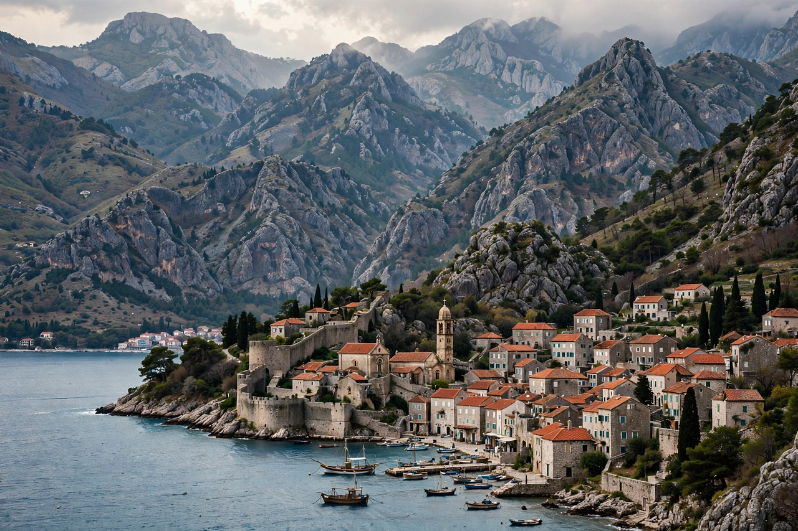

The Balkans are a geographical area in southeastern Europe, taking their name from the Balkan Mountains. The region includes Albania, Bosnia and Herzegovina, Bulgaria, Croatia, Greece, Kosovo, Montenegro, North Macedonia, Romania, Serbia, Slovenia and European Turkey, in whole or part.

The peninsula is bounded by the Adriatic, Ionian, Aegean and Black Seas, and by the Danube, Sava and Kupa rivers to the north. Terrain is largely mountainous, including the Dinaric Alps, Pindus and Balkan ranges.
Home to ancient Greek, Roman, Byzantine and Ottoman civilisations, the Balkans saw competing national movements in the 19th century, the Balkan Wars of 1912-13, the Sarajevo assassination sparking World War I, communist states after World War II, and the violent breakup of Yugoslavia in the 1990s.
Several states are EU members (Greece, Bulgaria, Romania, Croatia, Slovenia), others are candidates, and regional cooperation continues amid lingering disputes.